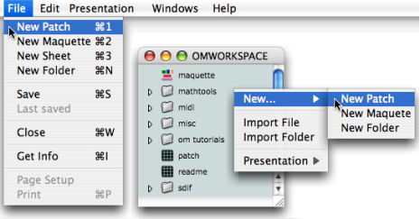

OpenMusic DocumentationHiérarchie de section : OM 6.6 User Manual > The OM Environment > Workspace > The Workspace Window
OpenMusic DocumentationHiérarchie de section : OM 6.6 User Manual > The OM Environment > Workspace > The Workspace Window
Navigation : page précédente | page suivante
Attention, votre navigateur ne supporte pas le javascript ou celui-ci à été désactivé. Certaines fonctionnalités de ce guide sont restreintes.
The Workspace Window
Visual programming in OM generally starts browsing the workspace window, in or der to create and/or select programming items.
Adding and Deleting Components in the Workspace Window
Adding Components
Different type of program representations can be used in OM :
- patches[\[1\]](#kFootBsktc1865)  (standard visual programs)
- maquettes[\[2\]](#kFootBsktc1868)  ("temporal" visual programs)
- lisp functions
 (textual programs)
(textual programs)
They can be added in the workspace as well as in the storage folders of the workspace.

To add an item in the workspace or in an open folder, use the File or contextual menu – Ctrl / right click :
-
New Patch – Maquette - Lisp Function – Folder
You can also use the following shortcuts :
- Patch :
Cmd+1 - Maquette : Cmd +2
- Folder : Cmd + n
Get Into Visual Programming
Maquettes
Using Lisp Functions
Reminder
The workspace window displays the items stored in the Elements sub folder of the Workspace folder.
Clearing or Deleting Items
To delete an item, select it and choose :
- clear :
Edit / Clear - cut :
Edit / CutorCmd+x
Clearing an item deletes it forever. It may be safer to choose the Cut command, which possibly allows to paste the item afterward.
Basic Procedures
Most operations on files and folders can be executed with the standard contextual menus and shortcuts.
Opening Folders and Programs
- Double click on an item, or
Ctrl/ right click and chooseopen. - In List mode , on may also click on the adjacent triangle of a folder – – to open it.
Moving Items from a Folder to Another
To move an items to another folder :
drag and drop the item.
cut and paste the item in an open folder :
- choose
Edit / Cut / Paste, - press
Cmd+x/Cmd+v.
- choose
Copying Components
- Select
Edit / Copy / Pasteor pressCmd+c/Cmd+v. - On Mac :
Altdrag and drop the item. On Windows :Cmddrag and drop the item.
Duplicating Components
To duplicate an item :
- select
Edit / Duplicate / Paste - press
Cmd+d.
Renaming Files and Folders
Double click on the name or press Enter to edit it  .
.
Click in the window or press Enter again to validate.
Saving Files, Folders and Workspaces
To save an item and its content,
- select
File/ Save - press
Cmd+s.
When saving a workspace, the dialogue window that opens allows to apply this choice to the whole content of the folder or workspace at once, or to selected items within the workspace.
No "Save As" Option
The "Save as" option is not available for any of the components of a workspace or a workspace itself.
Références :
Patch

A programming unit where objects and functions – boxes – are interconnected to build a musical algorithm, that is, a sequence of instructions. A patch can also be embedded as a box within another patch.
Maquette

A hybrid of visual program and sequencer, a programming unit provided with a time dimension, where musical material is organized in a time oriented structure.
Plan :
- OpenMusic Documentation
- OM 6.6 User Manual
- Introduction
- System Configuration and Installation
- Going Through an OM Session
- The OM Environment
- Environment Windows
- Preferences
- Workspace
- The Workspace Window
- Presentation Options
- Import / Export
- Library
- Tutorials
- Resources
- Visual Programming I
- Visual Programming II
- Basic Tools
- Score Objects
- Maquettes
- Sheet
- MIDI
- Audio
- SDIF
- Lisp Programming
- Errors and Problems
- OpenMusic QuickStart
Navigation : page précédente | page suivante
A propos...(c) Ircam - Centre Pompidou